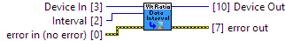

MinDataInterval and MaxDataInterval.
|
|
Device In Device # Identification |

|
|
error in (no error) error in can accept error information wired from VIs previously called. |

|
|
status status is TRUE (X) if an error occurred or FALSE (checkmark) to indicate a warning or that no error occurred. Right-click the error in control on the front panel and select Explain Error or Explain Warning from the shortcut menu for more information about the error. |

|
|
code code is the error or warning code. Right-click the error in control on the front panel and select Explain Error or Explain Warning from the shortcut menu for more information about the error. |

|
|
source source describes the origin of the error or warning. Right-click the error in control on the front panel and select Explain Error or Explain Warning from the shortcut menu for more information about the error. |

|
|
Interval The data interval for the channel Units: milliseconds (ms)
1011_0 (ver: 100, 101, 102, 103) Voltage Ratio Input: Min: 1 Max: 1000 Def: 256
1013_0 (ver: 800, 811, 820) Voltage Ratio Input: Min: 16 Max: 1000 Def: 256
1013_0 (ver: 821, 823) Voltage Ratio Input: Min: 16 Max: 1000 Def: 256 1018_0 (ver: 824, 825, 826) Voltage Ratio Input: Min: 16 Max: 1000 Def: 256 1018_1 (ver: 826) Voltage Ratio Input: Min: 16 Max: 1000 Def: 256 1019_0 (ver: 826) Voltage Ratio Input: Min: 16 Max: 1000 Def: 256 1070_0 (ver: 826) Voltage Ratio Input: Min: 16 Max: 1000 Def: 256
1010_0 (ver: 903, 904) Voltage Ratio Input: Min: 1 Max: 1000 Def: 256 1018_2 (ver: 900, 901, 902, 903, 904) Voltage Ratio Input: Min: 1 Max: 1000 Def: 256 1019_1 (ver: 903, 904) Voltage Ratio Input: Min: 1 Max: 1000 Def: 256 1072_0 (ver: 903) Voltage Ratio Input: Min: 1 Max: 1000 Def: 256 1073_0 (ver: 904) Voltage Ratio Input: Min: 1 Max: 1000 Def: 256
1046_0 (ver: 100, 101) Bridge Input: Min: 8 Max: 1000 Def: 256
1046_0 (ver: 102) Bridge Input: Min: 8 Max: 1000 Def: 256
1065_0 (ver: 100, 101) Voltage Ratio Input: Min: 8 Max: 60000 Def: 256 1065_1 (ver: 100, 101) Voltage Ratio Input: Min: 8 Max: 60000 Def: 256
1202_0 (ver: 100) Voltage Ratio Input: Min: 16 Max: 1000 Def: 256 1203_0 (ver: 100) Voltage Ratio Input: Min: 16 Max: 1000 Def: 256
1202_0 (ver: 120, 121) Voltage Ratio Input: Min: 16 Max: 1000 Def: 256 1202_1 (ver: 123, 124) Voltage Ratio Input: Min: 16 Max: 1000 Def: 256 1203_0 (ver: 120, 121) Voltage Ratio Input: Min: 16 Max: 1000 Def: 256 1203_1 (ver: 123, 124) Voltage Ratio Input: Min: 16 Max: 1000 Def: 256
1202_2 (ver: 200, 201, 202, 203, 204) Voltage Ratio Input: Min: 1 Max: 1000 Def: 256 1203_2 (ver: 200, 201, 202, 203, 204) Voltage Ratio Input: Min: 1 Max: 1000 Def: 256
HUB0000_0 (ver: 117, 118, 119) Voltage Ratio Input: Min: 1 Max: 60000 Def: 250 HUB0000_0 (ver: 121) Voltage Ratio Input: Min: 1 Max: 60000 Def: 250 HUB5000_0 (ver: 102) Voltage Ratio Input: Min: 1 Max: 60000 Def: 250 SBC3003_0 (ver: 101, 102) Voltage Ratio Input: Min: 1 Max: 60000 Def: 250 SBC3003_0 (ver: 108) Voltage Ratio Input: Min: 1 Max: 60000 Def: 250
DAQ1000_0 (ver: 102, 103) Voltage Ratio Input: Min: 20 Max: 60000 Def: 250
DAQ1000_0 (ver: 110) Voltage Ratio Input: Min: 20 Max: 60000 Def: 250
DAQ1500_0 (ver: 104) Bridge Input: Min: 20 Max: 60000 Def: 250
DCC1000_0 (ver: 115) Voltage Ratio: Min: 100 Max: 60000Val: 250
DCC1000_0 (ver: 204, 205, 206) Voltage Ratio: Min: 100 Max: 60000Val: 250
HIN1100_0 (ver: 104, 105) Thumbstick Axis: Min: 20 Max: 1000 Def: 100 |
|
|
Device Out Same as Device In |

|
|
error out error out passes error or warning information out of a VI to be used by other VIs. |

|
|
status status is TRUE (X) if an error occurred or FALSE (checkmark) to indicate a warning or that no error occurred. Right-click the error out control on the front panel and select Explain Error or Explain Warning from the shortcut menu for more information about the error. |

|
|
code code is the error or warning code. Right-click the error out control on the front panel and select Explain Error or Explain Warning from the shortcut menu for more information about the error. |

|
|
source source describes the origin of the error or warning. Right-click the error out control on the front panel and select Explain Error or Explain Warning from the shortcut menu for more information about the error. |